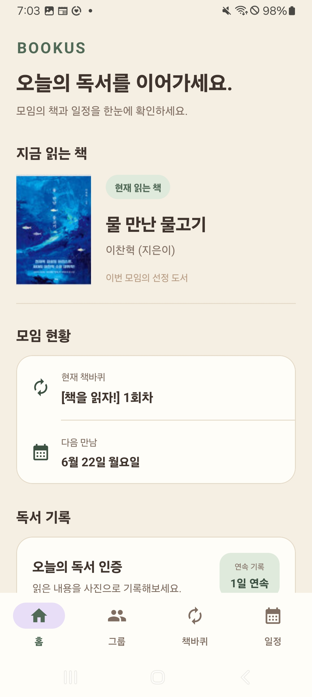
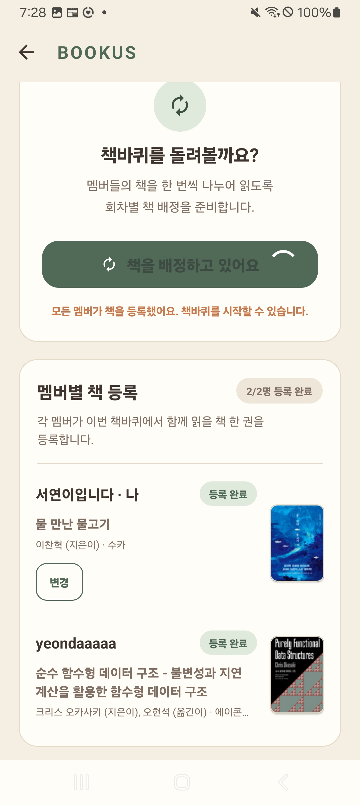
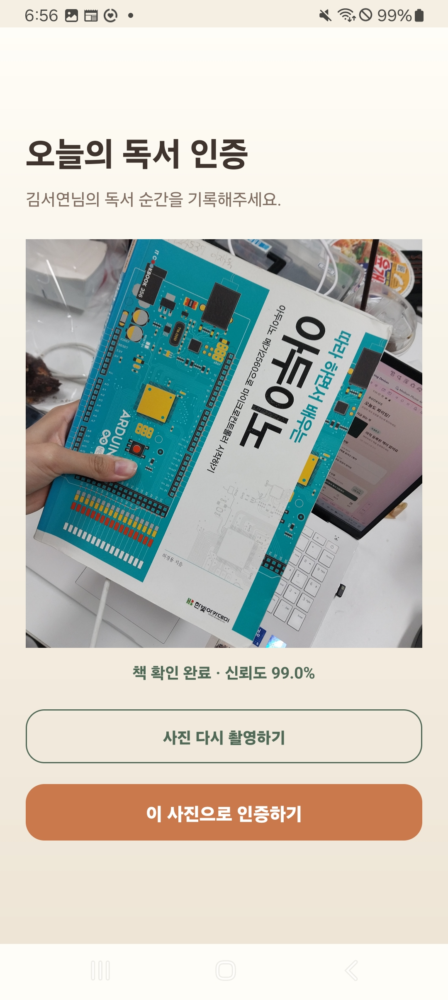
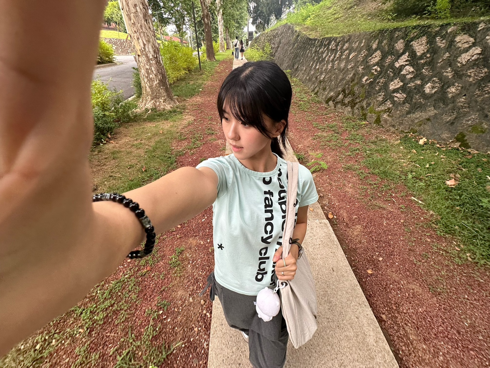
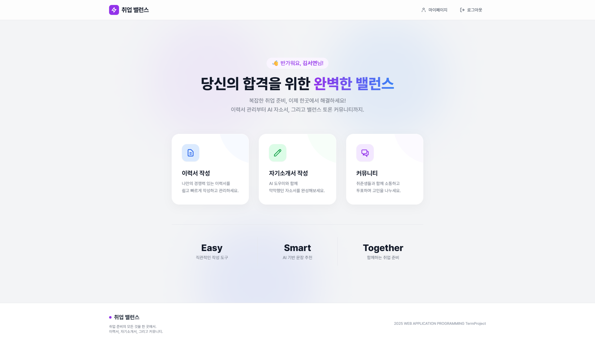
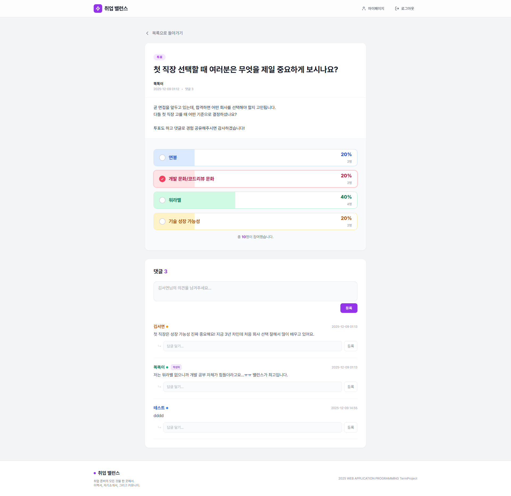
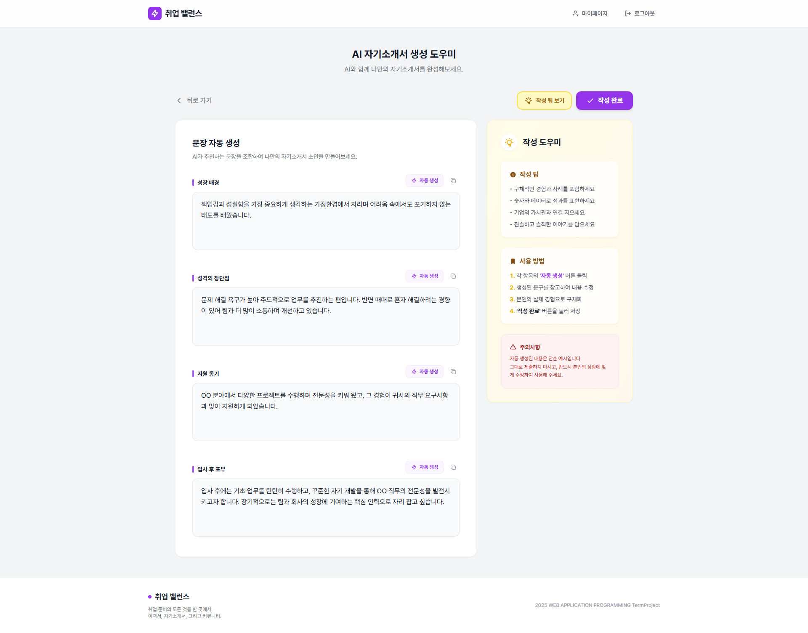

CS STUDENT
코드와 화면 사이,
사람이 느끼는 순간을 만듭니다.

About
HELLO, I'M SEOYEON
부산대학교 정보컴퓨터공학부에서 공부하며, 웹·앱·게임 개발과 HCI, 그래픽스에 관심을 두고 있습니다.
기술을 기능으로만 남기기보다 사람이 직접 보고, 만지고, 느낄 수 있는 경험으로 만드는 과정에 끌립니다. 아직 관심을 하나로 좁히기보다 다양한 분야를 부딪쳐 보며 저만의 방향을 찾는 중입니다.
Highlights
문제를 발견하고 기능과 화면, 사용자 경험을 함께 설계한 대표 프로젝트를 소개합니다.






취업 준비 홈이력서 작성, 자기소개서 작성, 커뮤니티 기능을 한곳에서 시작할 수 있도록 구성한 메인 화면입니다.
커뮤니티 · 밸런스 투표직접 아이디어를 내고 구현한 핵심 기능입니다. 투표 후 댓글을 작성하고, 선택한 항목의 색으로 서로 다른 의견을 빠르게 구분할 수 있습니다.
AI 자기소개서 작성항목별 추천 문장을 활용해 자기소개서 초안을 작성하고, 작성 팁을 함께 확인할 수 있도록 구성했습니다.
Project timeline
대표 프로젝트부터 작은 실험까지, 만들어 온 흐름을 연도별로 모았습니다.
2024
사직야구장 정보를 정리한 첫 웹 프로젝트.
2025
2026
책바퀴와 머신러닝 독서 인증으로 친구들과 책을 교환하고 함께 읽는 과정을 연결한 독서 모임 앱.
동아리에서 개발 중인 게임. 이번 학기 완성과 Steam 배포를 목표로 합니다.